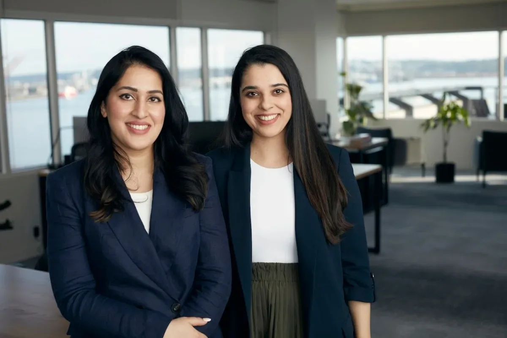

Исследования
Китай запретил RTX 5090D V2 во время визита Дженсена Хуанга в Пекин
Пекин запретил «урезанный» чип Nvidia прямо во время визита её CEO в Китай
Ars Technica
20 маяРелизы, исследования, продукты, инвестиции и AI-рынок.
Архив · 741 новостных материалов · Автоматическое пополнение приостановлено
Пекин запретил «урезанный» чип Nvidia прямо во время визита её CEO в Китай

Verizon: SMS и звонки опаснее email — фишинг через мобильные каналы бьёт рекорды кликабельности

13 долларов за зарядку, 8 за чистоту экрана: что редакция ZDNet покупает снова и снова

Google дала журналисту полную свободу с Android XR-очками — результат пугает конкурентов

Китайские робостартапы побили рекорд финансирования: $5,6 млрд за пять месяцев и очередь на IPO

Четыре настройки Android Auto, которые делают каждую поездку безопаснее

Allen ИИ сделала спутниковый ИИ втрое дешевле — как им удалось не потерять точность

Firefox против Chrome: почему открытый код и независимость важны для приватности в эпоху ИИ

Status ИИ привлёк $17 млн на платформу, где ИИ позволяет жить внутри любимых историй.

Google I/O 2026: Gemini Intelligence, Googlebook и Android 17 — все ключевые анонсы первого дня конференции.

Шесть компаний забрали $90 млрд из венчурного рынка США. Что осталось остальным 6000?

Razr Fold + монитор + клавиатура: насколько это реально заменяет ноутбук

Meta увольняет 8000 и одновременно переводит 7000 в ИИ — что происходит внутри компании

Google I/O 2026: Android 17, Gemini Intelligence и умные очки — главные анонсы
NVIDIA вручила первые Vera CPU лабораториям: чем важен новый процессор для агентного ИИ.

Mandiant: атакующие передают доступ к сети за 22 секунды — как выстроить защиту

«Сбер» анонсировал запуск коммуникационной платформы с ИИ-помощником к 2027 году и назвал целевые доли рынка.

Nectar Social с $30 млн Series A: как ИИ-агенты меняют маркетинг в соцсетях
В 2019 году Cerebras сжигала $8 млн в месяц, но выжила и вышла на IPO с оценкой $60 млрд

6–8 карт в кошельке — и всё равно платишь не той. Как с этим борется Cashmate

IBM открыла мультиязычные эмбеддинги с 32K-контекстом: лучший результат в классе до 100M параметров

Брокман — $30 млрд, Суцкевер — $7 млрд: суд вскрыл доли сооснователей OpenAI

Как AWS соединяет GPU, сеть и хранилище для обучения фундаментальных моделей — технический разбор

4B-модель для SOC-аналитиков работает локально и обходит 8B-конкурента от Cisco на ключевых benchmark

Sequoia собрала 150 лидеров ИИ и объяснила, где стартапам искать точку роста в 2026 году

Модель с 128 экспертами, где можно взять 16 — и почти не потерять в качестве

Медицинский ИИ на AMD без CUDA: LoRA-дообучение за 5 минут и три строки настройки

Берлинский стартап автоматизирует колл-центры на GPT-5 — и сокращает звонки операторам на 80%
Страховой стартап Corgi за 4 месяца вырос до $1,3 млрд — что он страхует и кто за ним стоит
Robinhood запустил венчурный фонд с OpenAI и Stripe внутри — без аккредитации и без 20% carry